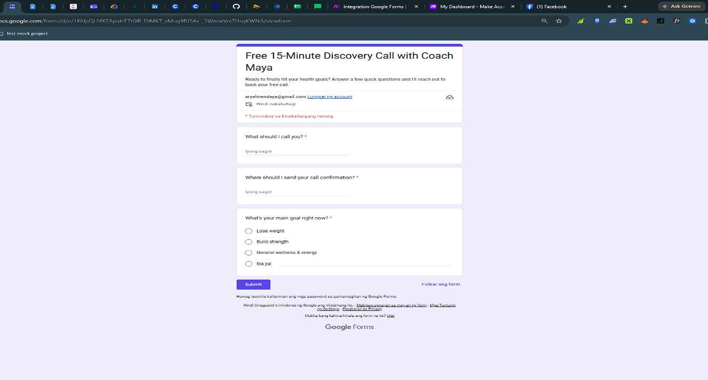
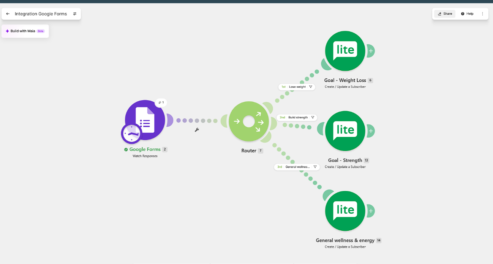
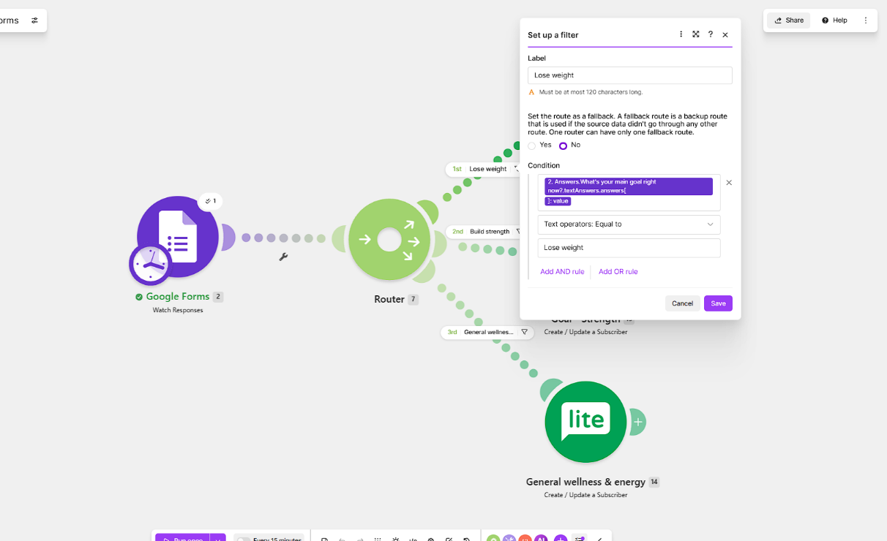
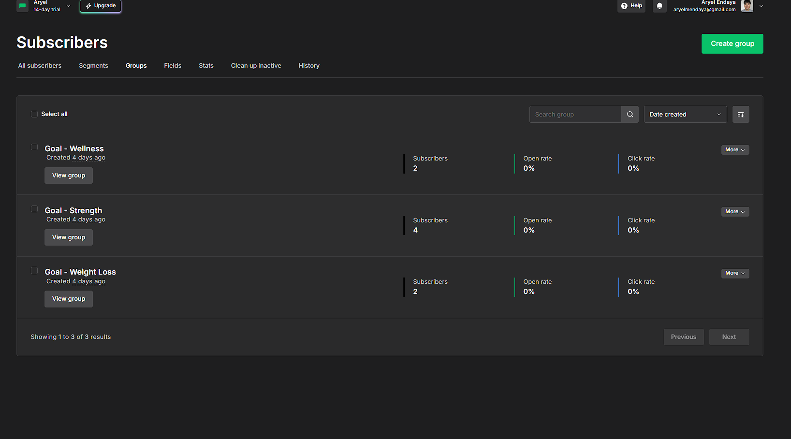
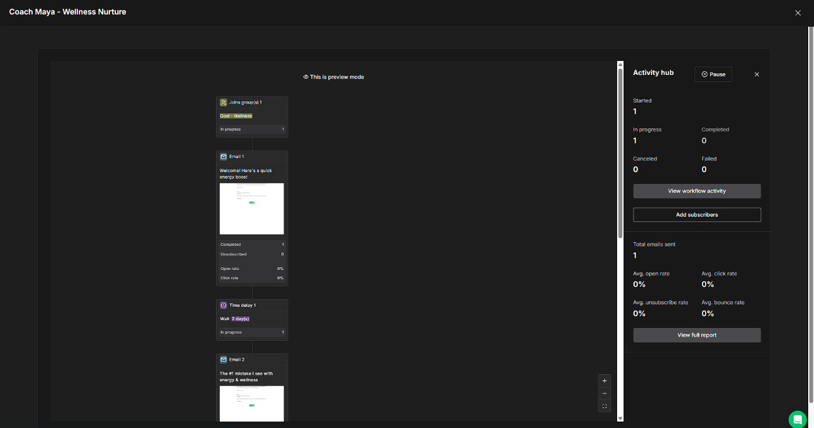
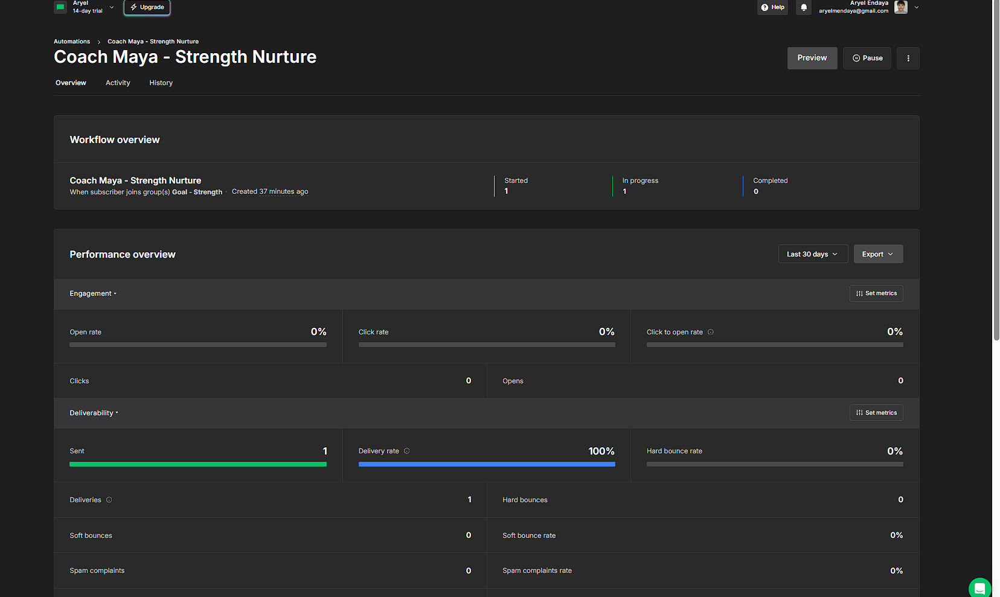

Lead Capture → CRM Nurture Pipeline
A conditional automation build for a fictional wellness coaching client ("Coach Maya"). A single form submission is routed into one of three tailored email nurture tracks based on the lead's stated goal — no manual tagging, no manual sending.
The problem
Every lead has a different goal — weight loss, building strength, or general wellness — and a single generic "thanks for signing up" email doesn't speak to any of them well. The system needed to read a lead's stated goal, tag them correctly in the CRM, and trigger the right 3-email sequence automatically.

The build
A Make.com scenario watches the Google Form for new responses and uses a Router with three parallel, filtered paths — one per goal. Each path maps the lead's name and email into a MailerLite "Create/Update Subscriber" action and assigns the matching group, which in turn triggers its own 3-email MailerLite automation (immediate welcome → common-mistake email on day 2 → low-pressure booking nudge on day 4).

The debugging story
The branching logic didn't work on the first try, or the fifth. Google Forms' API wraps every answer inside a nested object (textAnswers.answers[].value), and Make.com's UI often displayed a mapping as if it pointed to the right question while actually referencing the wrong depth of that object — producing a string of "invalid email address" errors even when the visible label looked correct.

.value field for every mapped field rather than trusting the auto-suggested mapping — then replicate that pattern cleanly across all three router paths. Two secondary issues (a stale trigger checkpoint, a typo'd test email blocking the queue) were resolved by understanding why Make's trigger works the way it does, not just retrying the same click.


Results
| Goal selected | Routed to | Automation triggered | Email 1 sent |
|---|---|---|---|
| Lose weight | Goal – Weight Loss | ✓ | ✓ |
| Build strength | Goal – Strength | ✓ | ✓ |
| General wellness & energy | Goal – Wellness | ✓ | ✓ |

What this demonstrates
- Building conditional, multi-path automations — not just simple A→B zaps
- Reading and debugging third-party API data structures under real error conditions
- Structuring a CRM around segmentation logic tied to actual business goals
- Writing targeted, goal-specific nurture copy
- Working iteratively and systematically through a non-trivial technical problem